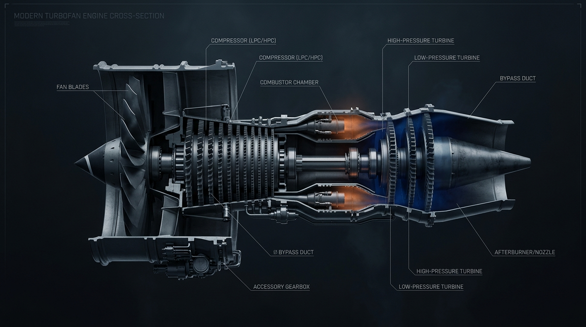

Monitored Fleet
--
C-MAPSS FD001
Healthy
--
(--%)
Monitor
--
(--%)
Maintenance Req.
--
(--%)
Critical
--
(--%)
Monitored Turbofan Engine Fleet Telemetry Table
| Engine Code | Aircraft | Cycle | Predicted RUL | Anomaly Score | Health Status | Priority Score | Action |
|---|---|---|---|---|---|---|---|
| Loading telemetry... | |||||||
Aircraft Registry DEMO / SIMULATED FLEET
| Aircraft ID | Registration | Model | Operator | Base Airport | Flight Hours | Flight Cycles | Status |
|---|---|---|---|---|---|---|---|
| Loading aircraft registry... | |||||||
Engine Diagnostic Inspector: Engine AE-0001-L
HEALTHY
Predicted RUL
--
Expected Range: --
Anomaly Score
--
Nominal Baseline
Composite Health
--
Weighted Index (0-100%)
Model Confidence
--%
Statistical Certainty
Cycle Health Trajectory
Subsystem Degradation
Subsystem Structural Cutaway

AERIS INTELLIGENCE — AI Diagnostic Summary
Engine telemetry demonstrates nominal operational baseline across all compressor and turbine stages. No active fault signature or anomalous drift detected.
C-MAPSS Replay Mode REAL C-MAPSS RUN-TO-FAILURE TELEMETRY
Current Health State
HEALTHY
Predicted RUL
125 cycles
Real-Time What-If Telemetry Simulator SIMULATED SCENARIO
35 cycles
72
Simulation Outcome
Run simulation to evaluate Before vs. After impact on Health Index, Risk Rating, and Maintenance Window.
Maintenance Control Center & Work Orders
| WO ID | Aircraft | Engine Code | Issue Summary | Priority | Recommended Action | Urgency Window | Assigned Engineer | Status |
|---|---|---|---|---|---|---|---|---|
| Loading work orders... | ||||||||
Alert Center & Safety Notifications
Aerospace Health Reports & Data Export
Export official fleet health assessments, model predictions, and maintenance work orders in CSV/JSON format for reporting.
Download Complete Fleet CSV Report AERIS Administration & Audit Control
Role-Based User Management and System Audit Logs.
[AUDIT LOG] System initialized and seeded with 20 demo aircraft profiles and 100 C-MAPSS engines.